Honeycomb Lattice
Preamble
using TightBindingLattice
using LinearAlgebra
using Plots
simplifyname(s::AbstractString) = (
s |> (x-> replace(x, r"<sup>(.+?)</sup>" => s"\1"))
|> (x-> replace(x, r"<sub>(.+?)</sub>" => s"[\1]"))
)
mkpath("example_honeycomb_symmetry")
extent = [-2.5, 2.5, -2.5, 2.5]
within(r) = (extent[1] <= r[1] <= extent[2] && extent[3] <= r[2] <= extent[4]);Set up Lattice and Symmetry
scale_matrix = [2 2; -2 4]
@assert det(scale_matrix) ≈ 12
unitcell = makeunitcell([1 -0.5; 0 0.5*sqrt(3.0)])
addsite!(unitcell, "A", carte2fract(unitcell, [0.5, 0.5/sqrt(3)]))
addsite!(unitcell, "B", carte2fract(unitcell, [0.5,-0.5/sqrt(3)]))
lattice = makelattice(unitcell, scale_matrix)
tsymbed = translation_symmetry_embedding(lattice)
tsym = symmetry(tsymbed)
psym = project(PointSymmetryDatabase.get(25), [1 0 0; 0 1 0])
psymbed = embed(lattice, psym)
print("Point group: ", psym.hermann_mauguin)Point group: 6mm
Permutations
println("Translation Permutations")
println("------------------------")
for t in tsymbed
println(t)
end
println()
println("Point Permutations")
println("------------------")
for p in psymbed
println(p)
end
println()Translation Permutations ------------------------ SitePermutation(Permutation([1, 2, 3, 4, 5, 6, 7, 8, 9, 10, 11, 12, 13, 14, 15, 16, 17, 18, 19, 20, 21, 22, 23, 24], 1)) SitePermutation(Permutation([3, 4, 5, 6, 7, 8, 9, 10, 11, 12, 1, 2, 15, 16, 17, 18, 19, 20, 21, 22, 23, 24, 13, 14], 6)) SitePermutation(Permutation([5, 6, 7, 8, 9, 10, 11, 12, 1, 2, 3, 4, 17, 18, 19, 20, 21, 22, 23, 24, 13, 14, 15, 16], 3)) SitePermutation(Permutation([7, 8, 9, 10, 11, 12, 1, 2, 3, 4, 5, 6, 19, 20, 21, 22, 23, 24, 13, 14, 15, 16, 17, 18], 2)) SitePermutation(Permutation([9, 10, 11, 12, 1, 2, 3, 4, 5, 6, 7, 8, 21, 22, 23, 24, 13, 14, 15, 16, 17, 18, 19, 20], 3)) SitePermutation(Permutation([11, 12, 1, 2, 3, 4, 5, 6, 7, 8, 9, 10, 23, 24, 13, 14, 15, 16, 17, 18, 19, 20, 21, 22], 6)) SitePermutation(Permutation([13, 14, 15, 16, 17, 18, 19, 20, 21, 22, 23, 24, 1, 2, 3, 4, 5, 6, 7, 8, 9, 10, 11, 12], 2)) SitePermutation(Permutation([15, 16, 17, 18, 19, 20, 21, 22, 23, 24, 13, 14, 3, 4, 5, 6, 7, 8, 9, 10, 11, 12, 1, 2], 6)) SitePermutation(Permutation([17, 18, 19, 20, 21, 22, 23, 24, 13, 14, 15, 16, 5, 6, 7, 8, 9, 10, 11, 12, 1, 2, 3, 4], 6)) SitePermutation(Permutation([19, 20, 21, 22, 23, 24, 13, 14, 15, 16, 17, 18, 7, 8, 9, 10, 11, 12, 1, 2, 3, 4, 5, 6], 2)) SitePermutation(Permutation([21, 22, 23, 24, 13, 14, 15, 16, 17, 18, 19, 20, 9, 10, 11, 12, 1, 2, 3, 4, 5, 6, 7, 8], 6)) SitePermutation(Permutation([23, 24, 13, 14, 15, 16, 17, 18, 19, 20, 21, 22, 11, 12, 1, 2, 3, 4, 5, 6, 7, 8, 9, 10], 6)) Point Permutations ------------------ SitePermutation(Permutation([1, 2, 3, 4, 5, 6, 7, 8, 9, 10, 11, 12, 13, 14, 15, 16, 17, 18, 19, 20, 21, 22, 23, 24], 1)) SitePermutation(Permutation([11, 22, 19, 6, 3, 14, 23, 10, 7, 18, 15, 2, 17, 4, 1, 24, 21, 8, 5, 16, 13, 12, 9, 20], 3)) SitePermutation(Permutation([15, 12, 5, 14, 19, 4, 9, 18, 23, 8, 1, 22, 21, 6, 11, 20, 13, 10, 3, 24, 17, 2, 7, 16], 3)) SitePermutation(Permutation([12, 11, 10, 9, 8, 7, 6, 5, 4, 3, 2, 1, 24, 23, 22, 21, 20, 19, 18, 17, 16, 15, 14, 13], 2)) SitePermutation(Permutation([2, 15, 18, 7, 10, 23, 14, 3, 6, 19, 22, 11, 20, 9, 12, 13, 16, 5, 8, 21, 24, 1, 4, 17], 6)) SitePermutation(Permutation([22, 1, 8, 23, 18, 9, 4, 19, 14, 5, 12, 15, 16, 7, 2, 17, 24, 3, 10, 13, 20, 11, 6, 21], 6)) SitePermutation(Permutation([15, 2, 7, 18, 23, 10, 3, 14, 19, 6, 11, 22, 21, 8, 1, 24, 17, 4, 9, 20, 13, 12, 5, 16], 2)) SitePermutation(Permutation([11, 12, 9, 10, 7, 8, 5, 6, 3, 4, 1, 2, 17, 18, 15, 16, 13, 14, 23, 24, 21, 22, 19, 20], 2)) SitePermutation(Permutation([1, 22, 23, 8, 9, 18, 19, 4, 5, 14, 15, 12, 13, 10, 11, 20, 21, 6, 7, 16, 17, 2, 3, 24], 2)) SitePermutation(Permutation([22, 11, 6, 19, 14, 3, 10, 23, 18, 7, 2, 15, 16, 5, 12, 13, 20, 9, 4, 17, 24, 1, 8, 21], 2)) SitePermutation(Permutation([2, 1, 4, 3, 6, 5, 8, 7, 10, 9, 12, 11, 20, 19, 22, 21, 24, 23, 14, 13, 16, 15, 18, 17], 2)) SitePermutation(Permutation([12, 15, 14, 5, 4, 19, 18, 9, 8, 23, 22, 1, 24, 3, 2, 17, 16, 7, 6, 21, 20, 11, 10, 13], 2))
Plots for Translation Symmetry Embeddings
for (i_elem, perm) in enumerate(elements(tsymbed))
elname = element_name(tsym, i_elem)
fig = plot(title=elname, aspect=1, size=(200, 250), grid=false, titlefont=Plots.font("sans-serif", pointsize=8))
orbcoords = []
orbnames = []
for iorb in eachindex(lattice.supercell.sites)
orbfc = getsitecoord(lattice.supercell, perm(iorb))
orbcc = fract2carte(lattice.supercell, orbfc)
push!(orbnames, "$iorb")
push!(orbcoords, orbcc)
end
orbcoords = hcat(orbcoords...)
L = lattice.supercell.latticevectors
for R1 in -2:2, R2 in -2:2
R = [R1, R2]
LR = L * R
idx_filt = [i for (i, r) in enumerate(eachcol(orbcoords)) if within(r .+ LR)]
scatter!(
orbcoords[1,idx_filt] .+ LR[1],
orbcoords[2,idx_filt] .+ LR[2],
color="blue",
markerstrokecolor="blue",
series_annotations=[Plots.text(x, 6, :left, :bottom) for x in orbnames[idx_filt]],
label=nothing
)
end
xlims!(extent[1], extent[2])
ylims!(extent[3], extent[4])
savefig(fig, "example_honeycomb_symmetry/translation_symmetry-$i_elem.svg")
end/home/travis/.julia/packages/GR/8mv9N/src/../deps/gr/bin/gksqt: error while loading shared libraries: libQt5Widgets.so.5: cannot open shared object file: No such file or directory connect: Connection refused GKS: can't connect to GKS socket application GKS: Open failed in routine OPEN_WS GKS: GKS not in proper state. GKS must be either in the state WSOP or WSAC in routine ACTIVATE_WS /home/travis/.julia/packages/GR/8mv9N/src/../deps/gr/bin/gksqt: error while loading shared libraries: libQt5Widgets.so.5: cannot open shared object file: No such file or directory connect: Connection refused GKS: can't connect to GKS socket application GKS: Open failed in routine OPEN_WS GKS: GKS not in proper state. GKS must be either in the state WSOP or WSAC in routine ACTIVATE_WS /home/travis/.julia/packages/GR/8mv9N/src/../deps/gr/bin/gksqt: error while loading shared libraries: libQt5Widgets.so.5: cannot open shared object file: No such file or directory connect: Connection refused GKS: can't connect to GKS socket application GKS: Open failed in routine OPEN_WS GKS: GKS not in proper state. GKS must be either in the state WSOP or WSAC in routine ACTIVATE_WS /home/travis/.julia/packages/GR/8mv9N/src/../deps/gr/bin/gksqt: error while loading shared libraries: libQt5Widgets.so.5: cannot open shared object file: No such file or directory connect: Connection refused GKS: can't connect to GKS socket application GKS: Open failed in routine OPEN_WS GKS: GKS not in proper state. GKS must be either in the state WSOP or WSAC in routine ACTIVATE_WS /home/travis/.julia/packages/GR/8mv9N/src/../deps/gr/bin/gksqt: error while loading shared libraries: libQt5Widgets.so.5: cannot open shared object file: No such file or directory connect: Connection refused GKS: can't connect to GKS socket application GKS: Open failed in routine OPEN_WS GKS: GKS not in proper state. GKS must be either in the state WSOP or WSAC in routine ACTIVATE_WS /home/travis/.julia/packages/GR/8mv9N/src/../deps/gr/bin/gksqt: error while loading shared libraries: libQt5Widgets.so.5: cannot open shared object file: No such file or directory connect: Connection refused GKS: can't connect to GKS socket application GKS: Open failed in routine OPEN_WS GKS: GKS not in proper state. GKS must be either in the state WSOP or WSAC in routine ACTIVATE_WS /home/travis/.julia/packages/GR/8mv9N/src/../deps/gr/bin/gksqt: error while loading shared libraries: libQt5Widgets.so.5: cannot open shared object file: No such file or directory connect: Connection refused GKS: can't connect to GKS socket application GKS: Open failed in routine OPEN_WS GKS: GKS not in proper state. GKS must be either in the state WSOP or WSAC in routine ACTIVATE_WS /home/travis/.julia/packages/GR/8mv9N/src/../deps/gr/bin/gksqt: error while loading shared libraries: libQt5Widgets.so.5: cannot open shared object file: No such file or directory connect: Connection refused GKS: can't connect to GKS socket application GKS: Open failed in routine OPEN_WS GKS: GKS not in proper state. GKS must be either in the state WSOP or WSAC in routine ACTIVATE_WS /home/travis/.julia/packages/GR/8mv9N/src/../deps/gr/bin/gksqt: error while loading shared libraries: libQt5Widgets.so.5: cannot open shared object file: No such file or directory connect: Connection refused GKS: can't connect to GKS socket application GKS: Open failed in routine OPEN_WS GKS: GKS not in proper state. GKS must be either in the state WSOP or WSAC in routine ACTIVATE_WS /home/travis/.julia/packages/GR/8mv9N/src/../deps/gr/bin/gksqt: error while loading shared libraries: libQt5Widgets.so.5: cannot open shared object file: No such file or directory connect: Connection refused GKS: can't connect to GKS socket application GKS: Open failed in routine OPEN_WS GKS: GKS not in proper state. GKS must be either in the state WSOP or WSAC in routine ACTIVATE_WS /home/travis/.julia/packages/GR/8mv9N/src/../deps/gr/bin/gksqt: error while loading shared libraries: libQt5Widgets.so.5: cannot open shared object file: No such file or directory connect: Connection refused GKS: can't connect to GKS socket application GKS: Open failed in routine OPEN_WS GKS: GKS not in proper state. GKS must be either in the state WSOP or WSAC in routine ACTIVATE_WS /home/travis/.julia/packages/GR/8mv9N/src/../deps/gr/bin/gksqt: error while loading shared libraries: libQt5Widgets.so.5: cannot open shared object file: No such file or directory connect: Connection refused GKS: can't connect to GKS socket application GKS: Open failed in routine OPEN_WS GKS: GKS not in proper state. GKS must be either in the state WSOP or WSAC in routine ACTIVATE_WS
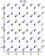 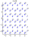 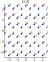 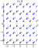 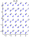 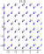 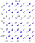 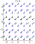 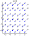 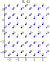 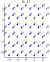 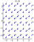
Plots for Point Symmetry Embeddings
for (i_elem, perm) in enumerate(elements(psymbed))
elname = element_name(psym, i_elem)
fig = plot(title=simplifyname(elname), aspect=1, size=(200, 250), grid=false, titlefont=Plots.font("sans-serif", pointsize=8))
orbcoords = []
orbnames = []
for iorb in eachindex(lattice.supercell.sites)
orbfc = getsitecoord(lattice.supercell, perm(iorb))
orbcc = fract2carte(lattice.supercell, orbfc)
push!(orbnames, "$iorb")
push!(orbcoords, orbcc)
end
orbcoords = hcat(orbcoords...)
L = lattice.supercell.latticevectors
for R1 in -2:2, R2 in -2:2
R = [R1, R2]
LR = L * R
idx_filt = [i for (i, r) in enumerate(eachcol(orbcoords)) if within(r .+ LR)]
scatter!(
orbcoords[1,idx_filt] .+ LR[1],
orbcoords[2,idx_filt] .+ LR[2],
color="blue",
markerstrokecolor="blue",
series_annotations=[Plots.text(x, 6, :left, :bottom) for x in orbnames[idx_filt]],
label=nothing
)
end
xlims!(extent[1], extent[2])
ylims!(extent[3], extent[4])
savefig(fig, "example_honeycomb_symmetry/point_symmetry-$i_elem.svg")
end/home/travis/.julia/packages/GR/8mv9N/src/../deps/gr/bin/gksqt: error while loading shared libraries: libQt5Widgets.so.5: cannot open shared object file: No such file or directory connect: Connection refused GKS: can't connect to GKS socket application GKS: Open failed in routine OPEN_WS GKS: GKS not in proper state. GKS must be either in the state WSOP or WSAC in routine ACTIVATE_WS /home/travis/.julia/packages/GR/8mv9N/src/../deps/gr/bin/gksqt: error while loading shared libraries: libQt5Widgets.so.5: cannot open shared object file: No such file or directory connect: Connection refused GKS: can't connect to GKS socket application GKS: Open failed in routine OPEN_WS GKS: GKS not in proper state. GKS must be either in the state WSOP or WSAC in routine ACTIVATE_WS /home/travis/.julia/packages/GR/8mv9N/src/../deps/gr/bin/gksqt: error while loading shared libraries: libQt5Widgets.so.5: cannot open shared object file: No such file or directory connect: Connection refused GKS: can't connect to GKS socket application GKS: Open failed in routine OPEN_WS GKS: GKS not in proper state. GKS must be either in the state WSOP or WSAC in routine ACTIVATE_WS /home/travis/.julia/packages/GR/8mv9N/src/../deps/gr/bin/gksqt: error while loading shared libraries: libQt5Widgets.so.5: cannot open shared object file: No such file or directory connect: Connection refused GKS: can't connect to GKS socket application GKS: Open failed in routine OPEN_WS GKS: GKS not in proper state. GKS must be either in the state WSOP or WSAC in routine ACTIVATE_WS /home/travis/.julia/packages/GR/8mv9N/src/../deps/gr/bin/gksqt: error while loading shared libraries: libQt5Widgets.so.5: cannot open shared object file: No such file or directory connect: Connection refused GKS: can't connect to GKS socket application GKS: Open failed in routine OPEN_WS GKS: GKS not in proper state. GKS must be either in the state WSOP or WSAC in routine ACTIVATE_WS /home/travis/.julia/packages/GR/8mv9N/src/../deps/gr/bin/gksqt: error while loading shared libraries: libQt5Widgets.so.5: cannot open shared object file: No such file or directory connect: Connection refused GKS: can't connect to GKS socket application GKS: Open failed in routine OPEN_WS GKS: GKS not in proper state. GKS must be either in the state WSOP or WSAC in routine ACTIVATE_WS /home/travis/.julia/packages/GR/8mv9N/src/../deps/gr/bin/gksqt: error while loading shared libraries: libQt5Widgets.so.5: cannot open shared object file: No such file or directory connect: Connection refused GKS: can't connect to GKS socket application GKS: Open failed in routine OPEN_WS GKS: GKS not in proper state. GKS must be either in the state WSOP or WSAC in routine ACTIVATE_WS /home/travis/.julia/packages/GR/8mv9N/src/../deps/gr/bin/gksqt: error while loading shared libraries: libQt5Widgets.so.5: cannot open shared object file: No such file or directory connect: Connection refused GKS: can't connect to GKS socket application GKS: Open failed in routine OPEN_WS GKS: GKS not in proper state. GKS must be either in the state WSOP or WSAC in routine ACTIVATE_WS /home/travis/.julia/packages/GR/8mv9N/src/../deps/gr/bin/gksqt: error while loading shared libraries: libQt5Widgets.so.5: cannot open shared object file: No such file or directory connect: Connection refused GKS: can't connect to GKS socket application GKS: Open failed in routine OPEN_WS GKS: GKS not in proper state. GKS must be either in the state WSOP or WSAC in routine ACTIVATE_WS /home/travis/.julia/packages/GR/8mv9N/src/../deps/gr/bin/gksqt: error while loading shared libraries: libQt5Widgets.so.5: cannot open shared object file: No such file or directory connect: Connection refused GKS: can't connect to GKS socket application GKS: Open failed in routine OPEN_WS GKS: GKS not in proper state. GKS must be either in the state WSOP or WSAC in routine ACTIVATE_WS /home/travis/.julia/packages/GR/8mv9N/src/../deps/gr/bin/gksqt: error while loading shared libraries: libQt5Widgets.so.5: cannot open shared object file: No such file or directory connect: Connection refused GKS: can't connect to GKS socket application GKS: Open failed in routine OPEN_WS GKS: GKS not in proper state. GKS must be either in the state WSOP or WSAC in routine ACTIVATE_WS /home/travis/.julia/packages/GR/8mv9N/src/../deps/gr/bin/gksqt: error while loading shared libraries: libQt5Widgets.so.5: cannot open shared object file: No such file or directory connect: Connection refused GKS: can't connect to GKS socket application GKS: Open failed in routine OPEN_WS GKS: GKS not in proper state. GKS must be either in the state WSOP or WSAC in routine ACTIVATE_WS
 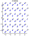 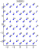 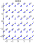 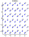 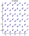 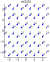 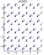 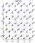 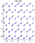 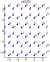
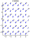 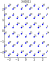 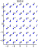 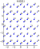 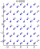 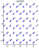 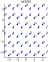 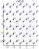 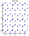 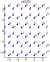
This page was generated using Literate.jl.